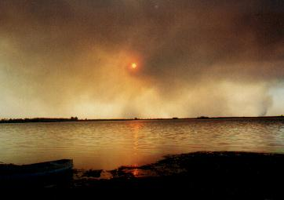

Día 1: Desde Buenos Aires hasta Pedro Luro (810 km.) Cruzar la Provincia de Buenos Aires en auto no es demasiado aventuroso, pero siempre hay algo que comentar. Uno de las sorpresas fue hallar que la laguna de Monte estaba atestada de hermosos Cisne Cuello Negro. Más al sur, tomado un “atajo” que bordea Olavarría y pasa por Cnel. Pringles, observamos bandadas inmensas compuestas por centenares (o miles) de cuervillos. Una lagunita en la zona de Pringles estaba habitada exclusivamente por Chajás, tal vez un centenar. Lo triste fue descubrir que una laguna conocida por la abundancia y variedad de patos estaba totalmente seca, a tal punto que solamente pudimos ubicar el lugar preciso cuando hicimos el camino de vuelta. Aún más al sur se comienzan a divisar las hermosas Sierras de la Ventana. Divisibles desde lejos, sus suaves laderas exponen el intenso amarillo de los girasoles en flor, alternando con parcelas de vegetación natural que han logrado sobrevivir al arado gracias a las mayores pendientes y la existencia de abundante rocas. Por suerte el auto tenía aire acondicionado, pues ese día el calor fue insoportable. A las 4 de la tarde nos detuvimos un rato en un parque próximo a Dique de Piedra para descansar un momento. El lugar es un descampado forestado, pero para llegar a la sombra del pinar hay que salir de la ruta e internarse por una senda de tierra apenas transitable. Allí las avispas y otros insectos invaden el auto. Cuando uno sale del auto en ropa y calzado liviano - lo más recomendable para disfrutar este tramo del viaje - los pastos secos, altos y filosos dificultan el andar. Mientras que si uno sale con medias y pantalón, los abrojos aprovechan muy bien la oportunidad para dispersarse por otras latitudes. Al abrir la puerta del auto nos sorprende el calor aplastante, y dudamos en salir. Tanto calor hacía que casi renuncié a recorrer en busca de aves, mientras el sol seguía calentando el aire todavía más. En eso aparecen dos señoras muy, pero muy mayores. Habían llegado en su auto propio y salieron a caminar. Me preguntaba qué hacían aquí… Cuando nos cruzamos, nos dijeron solamente estas palabras: “Como hacía tanto calor en Bahía Blanca, nos vinimos al fresco…” ¡Aquí hacía apenas 37 o 38 grados! En estos pequeños descansos los minutos vuelan, sobre todo si uno ha visto algo moverse entre las ramas. ¿Tal vez una especie nueva?. La oportunidad de observarla por primera vez es inminente… - pero no se dio. Oyendo los cantos, me di cuenta que, aquí, el del chingolo es diferente que en Buenos Aires. Veamos: en vez del característico “tu tui tiu - tiririri” que todos los porteños deberíamos reconocer, aquí, con exagerada lentitud provinciana y casi en cámara lenta, dice: “siiiiiiiii… - siu - siu - chi chi chi chi chi”. Por algo los taxónomos han identificado seis razas de esta especie en la Argentina. Y tras despejar las avispitas del auto, partimos, mientras el aire fresco de la refrigeración nos recompone. Pasamos la ciudad de Bahía Blanca y luego, cuando giramos hacia el sur para continuar por la Ruta 3 a Pedro Luro, observamos en el tablero del auto la indicación de la temperatura exterior: ¡40 grados a las 17hs! No parecía afectar a los vistosísmos Pechos Colorados que se posaban en los alambrados. ¿O eran Loicas Pampeanas? Tan raras hoy - pero tan parecidas… Una hora más tarde llegamos finalmente al primer lugar de pernocte: el “Descanso Ceferiniano de Pedro Luro”. Este sitio de gran interés tiene una capilla muy atractiva donde descansan los restos de San Ceferino Namuncurá, Santo araucano. En un edificio vecino funciona una suerte de hotel perteneciente a la obra de Don Bosco, y que sirve de base para retiros espirituales. Fuera de temporada queda abierto al viajante como lugar práctico, cómodo y seguro donde pernoctar. Pero nuestro día no terminaba aún, puesto que esperábamos la llegada de Rosemary, una residente de la zona, también apasionada por las aves. Apenas habíamos descargado todo, llegó mi amiga, y nos embarcamos en dos vehículos para visitar la Laguna Salada, ubicada a unos kilómetros de allí. Esa tarde la laguna presentaba una extraña fisonomía: un incendio en el oeste interceptaba algunos rayos solares, creando una enorme mancha de diversos tonos de naranja, rosado y sepia, mientras que el resto del cielo seguía aún celeste. Salimos con Rosemary por un sendero que bordea el lago. Aquí el camino era un tesoro de vegetación natural, donde abundaban los arbolitos de Chañar, enmarañados con gran variedad de especies arbustivas, como Piquillin, Jarilla y Alpataco, casi todas pinchudas. Pero si uno se animaba a cortar algunas de las diminutas hojas y oler sus perfumes, quedaba sorprendido: estas ramas secas y casi ponzoñosas entregaban diversos y exquisitos aromas. Estábamos en el bosque seco, o xerófilo, también conocido - ya por pocos - como el “espinal”, aquella gran columna vertebral boscosa que alguna vez recorría todo el oeste de la provincia de Buenos Aires y otras provincias, y del cual quedan ahora apenas relictos. Inmerso en este lote de plantas nativas tan particulares, uno no puede esperar otra cosa que aparezca la fauna, también nativa y particular, que lo habita. Así que descontábamos poder observar al menos algunas de las aves específicas que vinimos a buscar. Primero apareció el Cortarramas, con su pechera color ladrillo más vistosa de la que luce durante el invierno, cuando visita Buenos Aires. Se anunció con su característico “zzzzzzzzzz”, que se imita fácilmente con un peine y un palillo, pero se asemeja más al ruido de la ténebre puerta crujiente que podemos escuchar al comienzo del video “Thriller”, de Michael Jackson. Pusimos a prueba nuestro pasacassettes portátil, emitiendo las voces grabadas de otras especies. Y no tardaron en aparecer, desafiantes ante el insulto que significaban nuestras grabaciones. ¡Valla uno a saber que les fuimos a decir! A pesar que las grabaciones fueron registradas en otras provincias (¿les estábamos hablando en cordobés?) parecía que los dialectos eran entendibles. A estas aves también les estaba llegando la globalización… Apagamos el grabador, puesto que ya se habían acercado mucho, y no queríamos alterarlas más. Allí estaba el Gallito Copetón, quién no cesó de vocalizar durante toda nuestra estadía. Era la primera vez que lo veíamos, posado en las ramas de un cercano Chañar y vestido en su traje elegante y pintón. Luego apareció una hermosa Calandrita. Delicada y frágil, y con larga cola, a saltitos se desplazaba impune entre esos arbustos repletos de pinches amenazantes que apuntaban hacia todas las direcciones posibles. ¿Acaso puede una bailarina hacer el “pas-de-deux“ entre enormes rollos desplegados de alambre de púa, sin causarse heridas? Nos acercamos al borde de la laguna donde observamos todo tipo de aves acuáticas: rosados flamencos, patos flotantes, y las siluetas negras de gallaretas en número abundante. Recuerdo el extraño y mágico efecto de colores que reflejaba la superficie del agua: en esa tarde tranquila y calurosa, el fino oleaje de la laguna fusionaba los índigos y azules del cielo oscuro del atardecer que se presentaba por delante, con los tonos áureos y cobrizos producidos por el distante fuego en grandes extensiones de campo a nuestras espaldas. Reflexioné sobre otros hechos que sucedieron en esos 45 minutos que tardamos en recorrer aquel pequeño enclave: ¿Cuántas hectáreas de bosquecillos iguales o mejores que éste se consumieron ante las llamas? ¿Cuántos nidos ardieron, cuantas lagartijas, larvas y líquenes cesaron de existir? ¿Cuantas flores, ramas y añosos troncos se convirtieron en cenizas? ¿Podrá resurgir allí la vegetación nativa, o, como tantas veces ocurre, el ganado consumirá los futuros rebrotes, dando su golpe de gracia a nuestro agonizante espinal?  La luz solar filtrado por el humo iluminaba todo de sepia Muy agradecidos por su predisposición, su gran conocimiento y
agradable compañía, nos despedimos de Rosemary y partimos
hacia nuestras respectivas direcciones. Cenamos en la habitación,
apenas algunos bocados que habían sobrevivido al almuerzo. Ya era
de noche. Abrimos la ventana para que entre algo de aire fresco a la habitación.
Vimos el poniente aún levemente teñido de sepia por los incendios,
y escuchamos las espaciadas estridencias de una gran Lechuza de Campanario
que custodiaba el estacionamiento del “Ceferiniano”. Nos fuimos a dormir. |